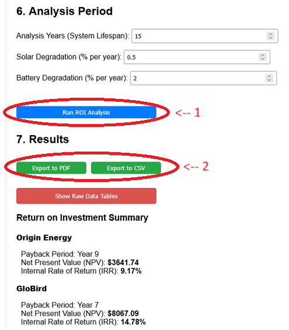
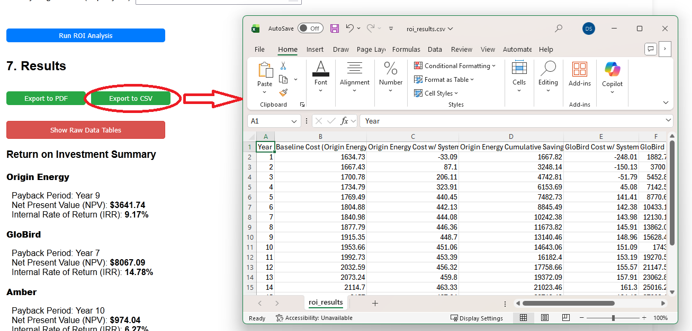
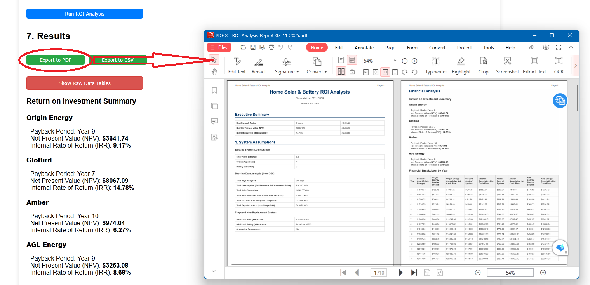

After running an analysis, the analyser provides two options to export your results for sharing or further review. This guide explains what each option does.
First, you must complete all configuration sections and click the Run ROI Analysis button.
Once the analysis is complete and the results are displayed, the "Export to PDF" and "Export to CSV" buttons will appear in Section 7, just below the "Results" title.

Clicking the Export to CSV button will generate and download a file named `roi_results.csv`.

What it's for:
This file is ideal for importing into spreadsheet software like Microsoft Excel or Google Sheets. It contains a simple table, matching the "Financial Breakdown by Year" table shown on the screen.
Content:
Clicking the Export to PDF button will generate a comprehensive, multi-page report and open your browser's "Save As" dialog.

Please Note: The PDF generation process can take 5-10 seconds as it renders all the charts and data tables. The button will change to "Generating..." while it works.
What it's for:
This file is a professional, shareable document perfect for comparing quotes, saving for your records, or showing to an installer.
Content:
The PDF report is a detailed summary of your entire analysis, including: